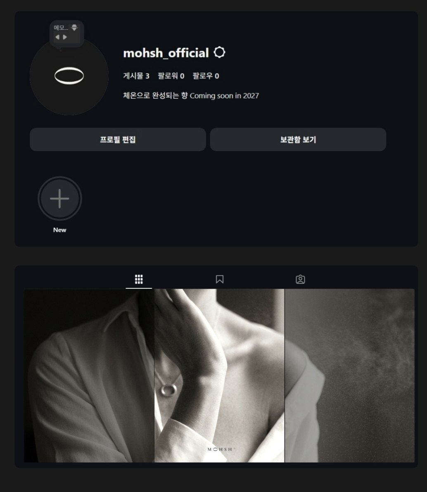

100-Day Agent
하나의 에이전트를 100일간 실사용하며 raw 데이터를 축적한 필드 스터디
FIELD STUDY · AI AGENT직접 만든 텔레그램 에이전트를 100일간 쓰며 발화·침묵 로그를 모으고, 거기서 판단(Judgment)과 공감(Empathy)이라는 에이전트 설계 원칙을 뽑아낸 필드 스터디.
자세히 보기 →13년차 브랜드 디자이너. 최근엔 AI 프로덕트를 직접 만들며 판단과 공감의 경계를 실험 중입니다.
하나의 에이전트를 100일간 실사용하며 raw 데이터를 축적한 필드 스터디
FIELD STUDY · AI AGENT직접 만든 텔레그램 에이전트를 100일간 쓰며 발화·침묵 로그를 모으고, 거기서 판단(Judgment)과 공감(Empathy)이라는 에이전트 설계 원칙을 뽑아낸 필드 스터디.
자세히 보기 →브랜드 인스타그램 피드 정기 자동 발행 파이프라인
NANO BANANA 2 · HOOTL
브랜드 담당자 없이도 SNS를 일관되게 유지할 수 있을까? 아이덴티티를 '사진 필터'로 고정하고, S·H 페르소나의 일기를 이미지·캡션 프롬프트로 바꿔 생성 — Claude 검수를 통과한 것만 Instagram에 자동 게시하는 HOOTL 시스템
자세히 보기 →코스메틱·리테일에서 브랜딩·패키징으로 13년, 지금은 삼성전자에서 가전 UX를 다룹니다. 브랜드에서 물리적 제품, 디지털 UX를 거쳐 이제 AI 프로덕트로 — 사용자가 제품과 관계 맺는 방식을 계속 디자인해왔습니다.
삼성 DAUX 팀의 사내 브랜딩 프로젝트입니다. 2023년 토끼해를 모티프로 팀 캐릭터를 만들고, 텀블러부터 굿즈까지 10여 종의 아이템을 기획·제작했어요. 팀 SCI(조직 몰입도)가 19포인트 올랐습니다.